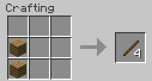

Je hebt veel verschillend gereedschap dat je kunt gebruiken. Ik ga hier het gereedschap laten zien:

De Pickaxe gebruik je om steen soorten en ores te hakken. Hoe beter je pickaxe hoe sneller en betere ores je kan hakken. Om een pickaxe te maken heb je sticks nodig, die maak je zo:
- Hout
- Steen
- IJzer
- Diamant
- Goud(Goud is niet aangeraden, het gaat heel snel kapot)
Zo maak je een pickaxe:
Een zwaard:
Een bijl:
Een schep:
Een ploeg: